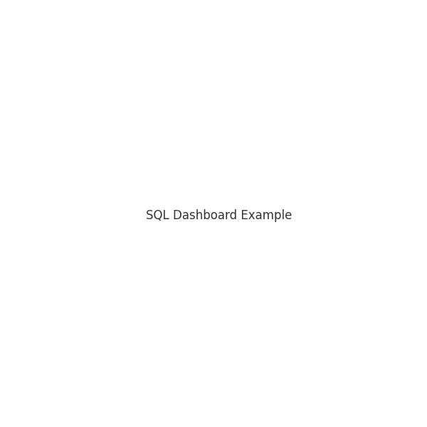

SQL Insights Dashboard
Overview
This project focuses on building a dashboard for analyzing business
metrics using SQL and Python.
Objectives
- Create dynamic queries to extract meaningful insights.
- Design dashboards that are easy to interpret.
Technologies Used
Results
Delivered an interactive dashboard summarizing key performance
indicators (KPIs).

SQL Dashboard